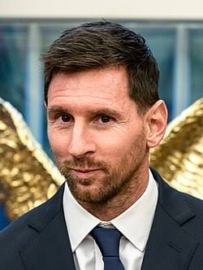
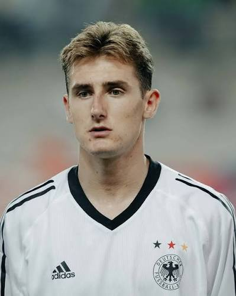
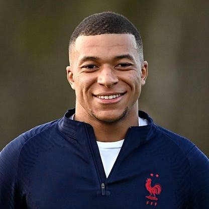
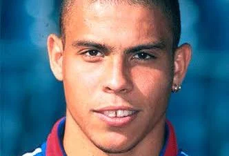
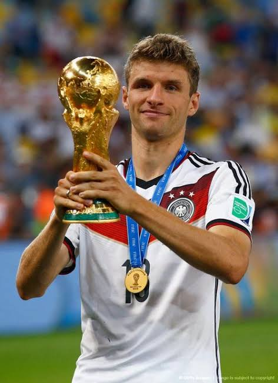
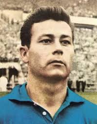
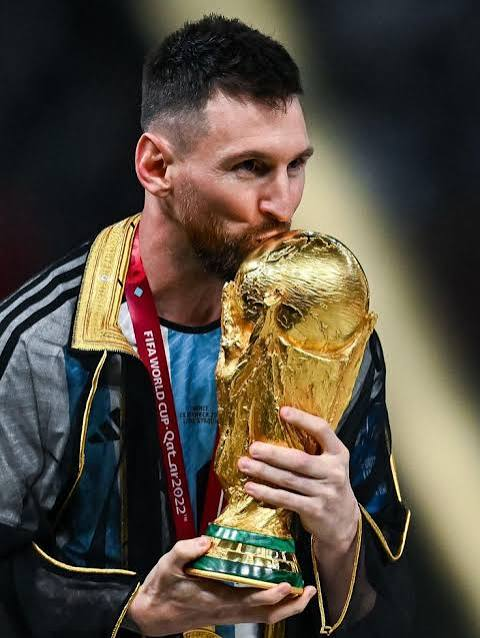
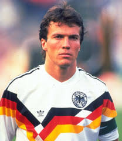
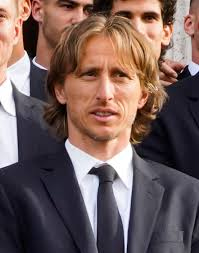
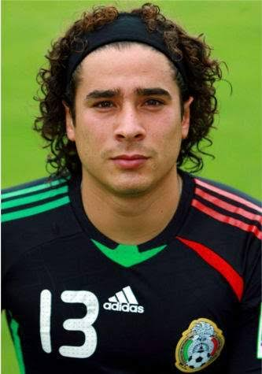

Máximos Goleadores de la Historia
| Foto | Jugador | País | Goles |
|---|---|---|---|
 |
Lionel Messi | Argentina | 19 |
 |
Miroslav Klose | Alemania | 16 |
 |
Kylian Mbappé | Francia | 16 |
 |
Ronaldo Nazário | Brasil | 15 |
 |
Gerd Müller | Alemania | 14 |
 |
Just Fontaine | Francia | 13 |
 |
Pelé | Brasil | 12 |
Máximos Asistidores
Pelé
País: Brasil
Asistencias: 10
Lionel Messi
País: Argentina
Asistencias: 9
Thomas Müller
País: Alemania
Asistencias: 6

Diego Maradona
País: Argentina
Asistencias: 8
Tarjeta Especial de Lionel Messi

Lionel Messi
País: Argentina
Goles en Mundiales: 18
Asistencias: 9
Más partidos jugados: 28
Campeón del Mundo 2022.
Participó en los Mundiales 2006, 2010, 2014, 2018, 2022 y 2026.
Récord absoluto de partidos disputados en la historia de los Mundiales.
Acumula 18 goles hasta la fase de grupos de 2026.
Acumula 9 asistencias.
Récord de seis Copas del Mundo disputadas.
Récords de Jugadores

Antonio Carbajal
México
Participó entre 1950 y 1966.
Cinco Copas del Mundo.

Lothar Matthäus
Alemania
1982 - 1998.
Cinco Mundiales.

Rafael Márquez
México
2002 - 2018.
Cinco Mundiales.

Andrés Guardado
México
2006 - 2022.
Cinco Mundiales.

Cristiano Ronaldo
Portugal
Participó en los Mundiales de 2006, 2010, 2014, 2018, 2022 y 2026.
Récord de seis Copas del Mundo disputadas.

Luka Modrić
Croacia
Participó entre 2006 y 2026.
Seis Copas del Mundo.

Guillermo Ochoa
México
Participó entre 2006 y 2026.
Récord de seis Copas del Mundo.
Récords Históricos
Más partidos jugados
Lionel Messi
28 partidos.
Récord que continúa ampliando durante el Mundial 2026.
Gol más rápido
Hakan Şükür
11 segundos.
Turquía vs Corea del Sur.
Corea - Japón 2002.
Más goles en un partido
Oleg Salenko
5 goles.
Rusia 6 - 1 Camerún.
Estados Unidos 1994.
Jugador más joven en debutar y anotar
Pelé
Debut: 17 años y 234 días.
Gol: 17 años y 239 días.
Suecia 1958.
Jugador más longevo
Essam El-Hadary
45 años y 161 días.
Rusia 2018.
Jugador más joven en un Mundial
Norman Whiteside
17 años y 41 días.
España 1982.
Récords de Selecciones
| Selección | Títulos |
|---|---|
| Brasil | 5 (1958, 1962, 1970, 1994, 2002) |
| Alemania | 4 (1954, 1974, 1990, 2014) |
| Italia | 4 (1934, 1938, 1982, 2006) |
| Argentina | 3 (1978, 1986, 2022) |
Más finales disputadas
Alemania
8 finales.
Ganó 4 y perdió 4.
Asistencia perfecta
Brasil.
Participó en las 23 ediciones desde 1930 hasta 2026.
Más goles en un torneo
Hungría.
27 goles.
Suiza 1954.
Mayor goleada
Hungría 10 - 1 El Salvador.
España 1982.
Peor campeón defensor
Francia 2002.
Eliminada en fase de grupos.
1 punto y 0 goles.
Partido con Más Goles en la Historia
Austria 7 - 5 Suiza
Mundial de 1954.
Partido disputado en Lausana.
Theodor Wagner
Austria.
3 goles.
Minutos 25, 27 y 53.
Josef Hügi
Suiza.
3 goles.
Minutos 16, 19 y 73.
Único jugador con hat-trick en una derrota.
Alfred Körner
Austria.
2 goles.
Robert Ballaman
Suiza.
2 goles.
Ernst Ocwirk
Austria.
1 gol.
Kurt Schmied
Austria.
1 autogol.
Erich Probst
Austria.
Marcó el 7-5 definitivo.
Máximos Goleadores en una Edición
| Jugador | País | Goles |
|---|---|---|
| Just Fontaine | Francia | 13 |
| Sándor Kocsis | Hungría | 11 |
| Gerd Müller | Alemania Federal | 10 |
| Eusébio | Portugal | 9 |
Hat-Tricks en Mundiales
Gerd Müller
2 Hat-tricks.
Sándor Kocsis
2 Hat-tricks.
Récord absoluto
Oleg Salenko.
5 goles en un solo partido.
Estados Unidos 1994.